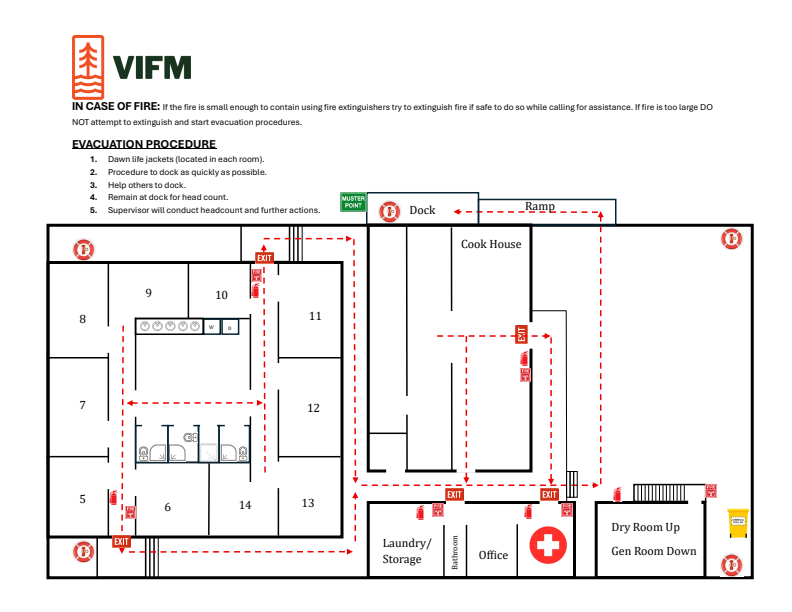

m1
VIFM Floorplan Studio
MEDIAONE / VIFM
Saved on this device
↶ Undo
Feedback
Save project
↓ Download PDF
Complete drawing set
11 × 17 in · portrait
Grid
−
75%
+
Fit
A published update is ready. Your notes and local edits will be kept.
Apply update
SCHEMATIC · NOT TO SCALE
Source: supplied drawings
Select an element to edit
Copy feedback into this chat
Close ×
Select and copy the report below, then paste it into the Codex chat.
Source drawing
Close ×
